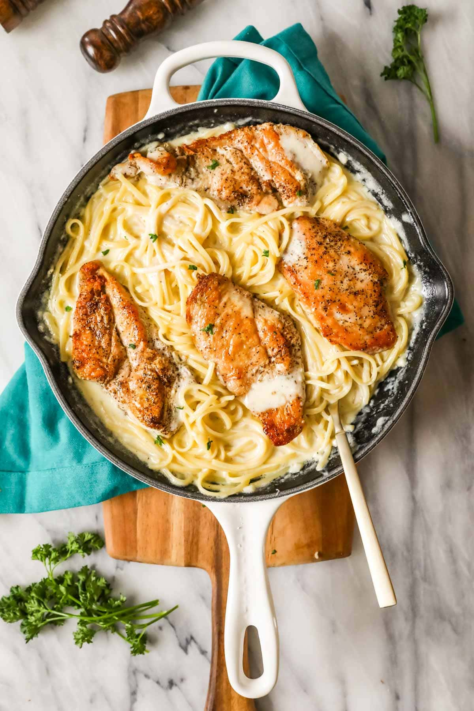

Description
Chicken alfredo baybeee, it's fuckin good!
Chicken alfredo is, in fact, so good, that I went through the trouble of stealing this recipe from allrecipes for this project, though I've never actually cooked this particular recipe.
Ingredients
- 1 pound uncoocked fetuccine or linguine
- 2 boneless chicken breast halves, cooked and cubed
- 1 jar Alfredo-style pasta sauce
- 1 package mixed vegetables
- 1 can sliced mushrooms
- 1/2 cup milk
Steps
- Fill a large pot with lightly salted water and bring to a rolling boil. Cook fettuccine at a boil until tender yet firm to the bite, about 8 minutes. Drain well.
- While the pasta is cooking, place cubed cooked chicken, Alfredo sauce, frozen vegetables, mushrooms, and milk in a large saucepan over medium-low heat. Cook and stir until chicken is heated through and vegetables are tender.
- Serve warm Alfredo and chicken sauce over cooked noodles.